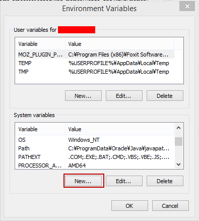
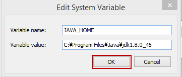
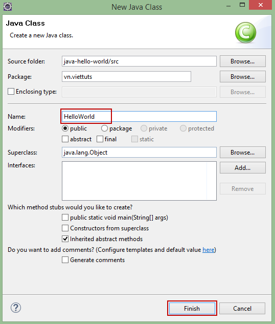
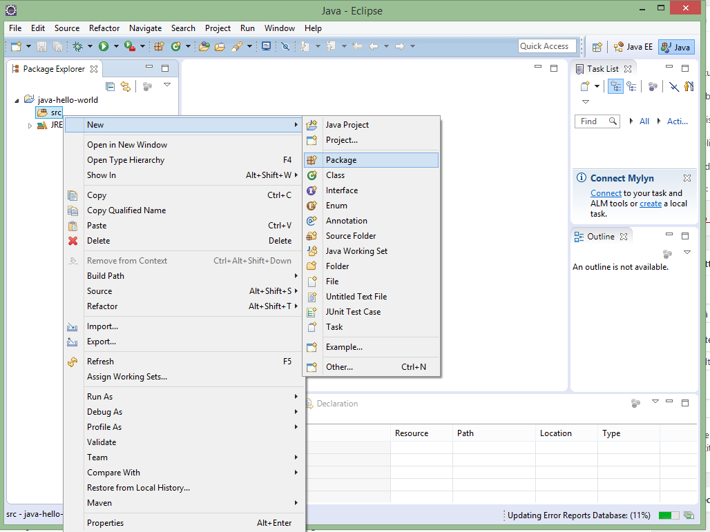
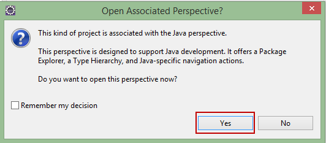
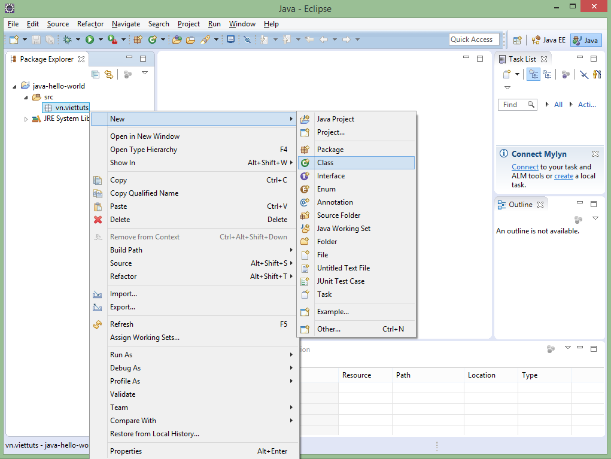
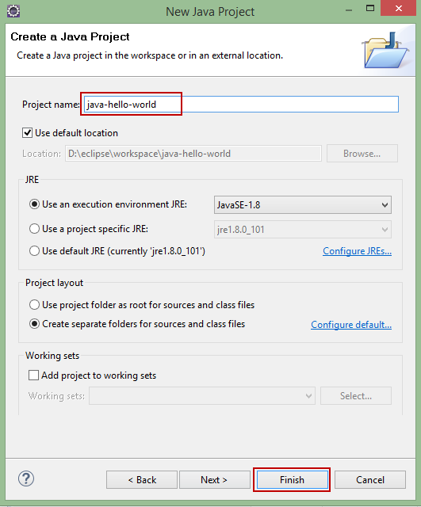
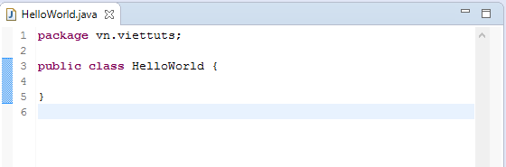
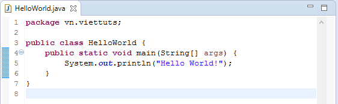
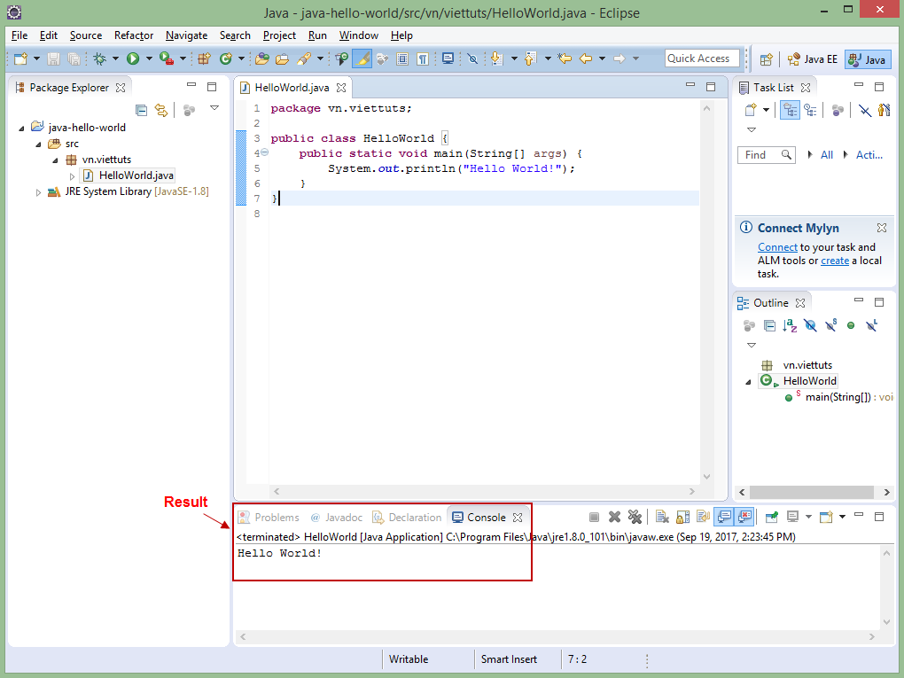

Bài học này mình hướng dẫn bạn:
Nội dung chính
Để lầm việc với java bạn phải cài đặt môi trường cho nó, môi trường java bao gồm những gì? Phần này viettuts.vn hướng dẫn bạn cài đặt môi trường cho java trên môi trường Windows. Còn trên môi trường Linux(Ubuntu) ở phía cuối của bài học.
Dưới đây là những gì cơ bản và cần thiết bạn cần phải cài đặt:
Về cơ bản thì chỉ cần 2 bước trên là đủ để tạo ra và chạy một chương trình java đơn giản. Dưới đây là chi tiết cho các bước trên.
JDK là gì? JDK (là viết tắt của Java Development Kit) là một bộ phát triển phần mềm để phát triển các ứng dụng trong Java. JDK bao gồm JRE và các Development Tool. Ngoài JRE, JDK cũng chứa số công cụ phát triển (trình biên dịch, JavaDoc, Java Debugger, ...) tham khảo tại sự khác nhau giữa JDK, JRE và JVM. Nên bạn chỉ cần tải JDK về là đủ.
Hiện nay có 2 phiên bản java được sử dụng phổ biến đó là JDK7 và JDK8, dưới đây là link download JDK8:
Sau khi tải JDK về, bạn cài đặt giống như cài đặt các phần mềm khác.
Việc cấu hình biến môi trường bao gồm 2 việc sau:
Click chuột phải vào biểu tượng MyComputer --> Properties -> Advanced system settings -> Environment Variables -> Click 'New' trong System Variables
Nhập: Variable name = "JAVA_HOME" và Variable value = [java-path]
Click: OK -> OK -> OK
Click chuột phải vào biểu tượng MyComputer --> Properties -> Advanced system settings -> Environment Variables -> edit biến Path trong System Variables -> thêm [java-path]\bin vào biến Path -> OK -> OK -> OK
Edit biến path trong System Variables
Nhập giá trị sau vào cuối biến path:
1 | C:\Program Files\Java\jdk1.8.0_45\bin |
Click button OK -> OK -> OK.
Bạn cần phải restart (hoặc sign out) máy tính sau khi cài đặt biến môi trường.
Khi mới học java có khi nào bạn tự hỏi các doạn code java được viết vào đâu (editor nào)? biên dịch và chạy nó như nào? Bạn có thể tham khảo bài Hello World trong java để biết cách tạo chương trình java bằng notepad và hiểu một chương trình java được biên địch như thế nào.
Nhưng sau đó bạn nên biết và sử dụng eclipse hoặc netbean, vì chúng là 2 IDE miễn phí phổ biến mạnh mẽ nhất được sử dụng trong việc lập trình java. Phần này viettuts.vn hướng dẫn bạn cách tạo và chạy chương trình java đầu tiên trên eclipse.
Tiếp theo là bạn cần phải tải về và cài đặt eclipse. Tham khảo bài download và cài đặt Eclipse IDE cho lập trình Java.
Dưới đây là các bước tạo chương trình java đầu tiên trên eclipse:
Chọn File -> New -> Other...
Nhập Wizards = "java project" để tìm kiếm nhanh:
Sau đó chọn "Java Project" -> Next:
Nhập project name: "java-hello-world" -> Finish
Click OK tại dialog "Open Associated Perspective"
Tạo package cho project: click chuột phải vào "src" -> New -> packpage
Nhập package name = "vn.viettuts" -> Finish
Click chuột phải vào packpage "vn.viettuts" -> New -> Class
Nhập Name = "HelloWorld" -> Finish
Eclipse tạo cho bạn lớp HelloWorld.java như sau:
Viết hàm main cho lớp HelloWorld.java như sau:
Sử dụng tổ hớp phím CTRL + F11 để chạy (run) chương trình java trên eclipse, với chương trình đã tạo ở trên chúng ta có kết quả như sau:
To be continued...